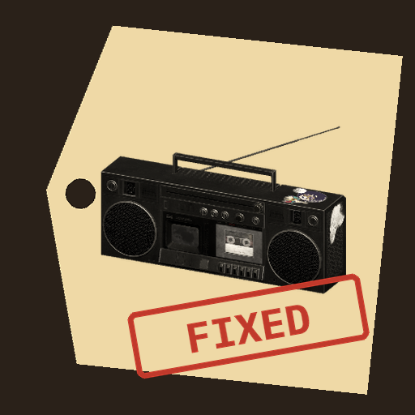

<- all projects

Second Chance Depot
PC
Volume
Live
Open crates of junk, restore hidden treasures and solve a decades-old mystery.
At the edge of the town dump, the Second Chance Depot repair shop has not opened in years. Every morning Mo, the dump driver, drops off a crate of discarded things, and the inspection lamp shows each item's condition, rarity and value. Strip it for parts, restore it for the sales shelf or keep it for the collector wall, across 30 items and three benches: electronics, woodwork and mechanical. Some items are stamped R.H., and over 6 chapters their notes reveal Rosa Hale, an inventor who vanished in 1979. Afterwards, open depots in new towns.